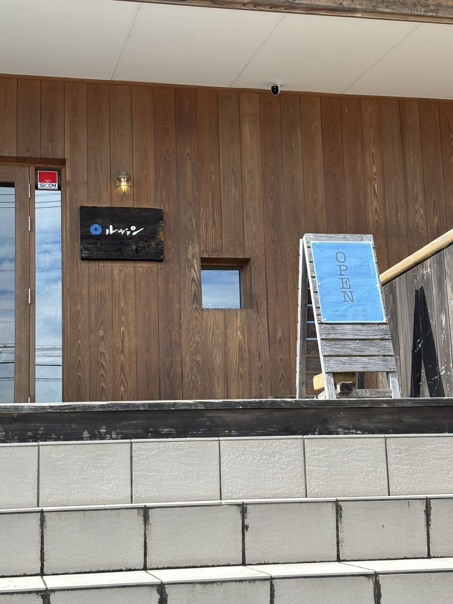
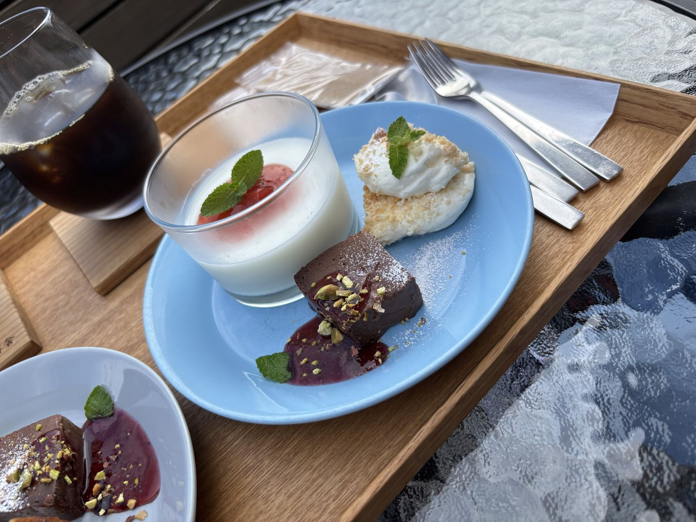
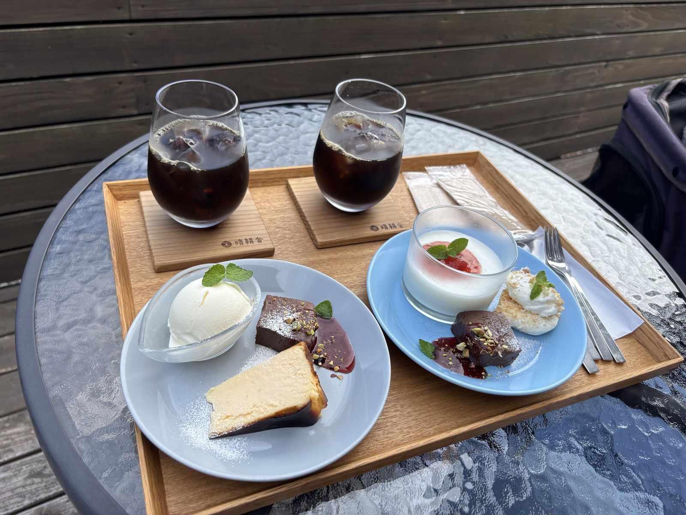
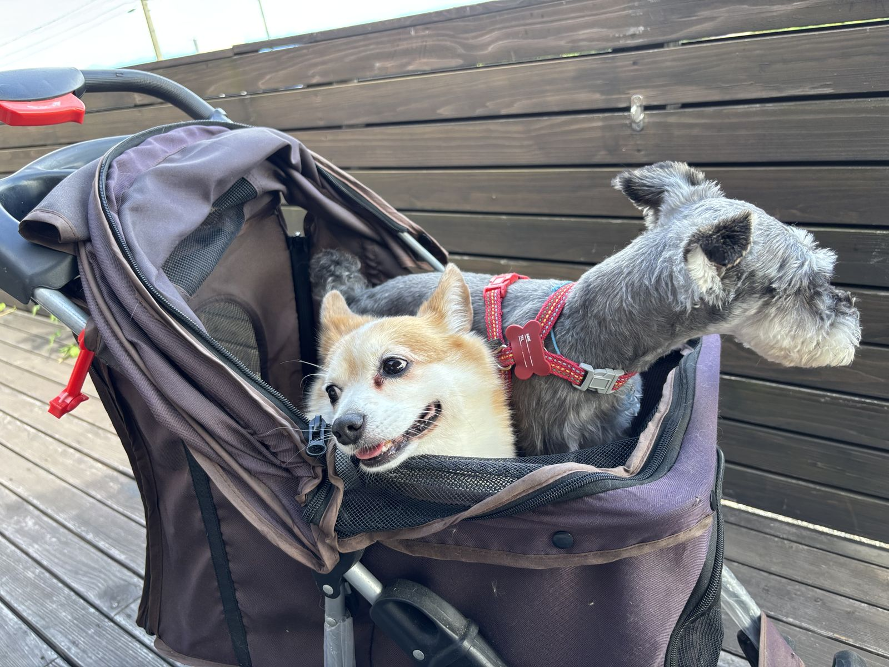
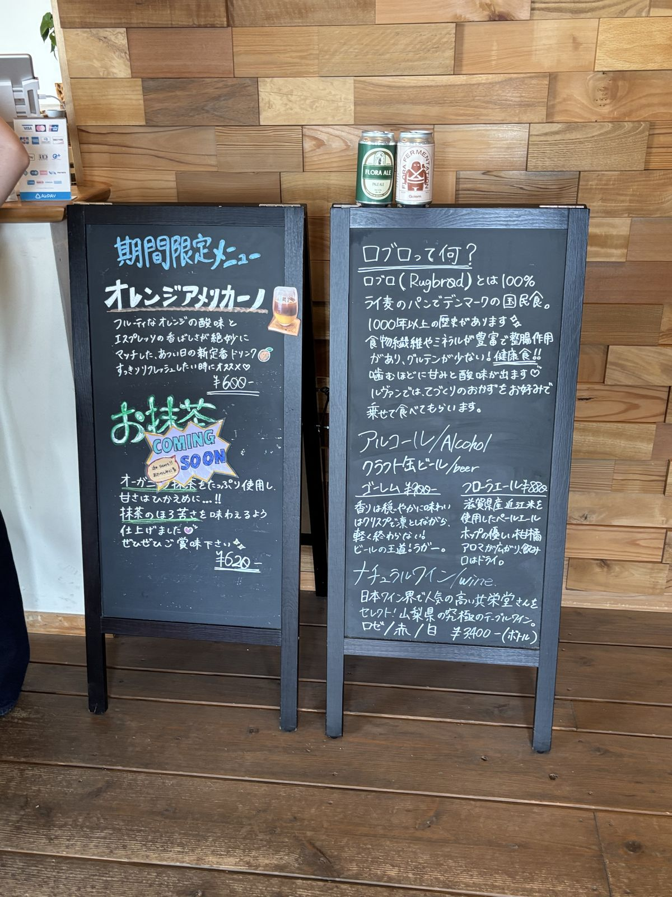
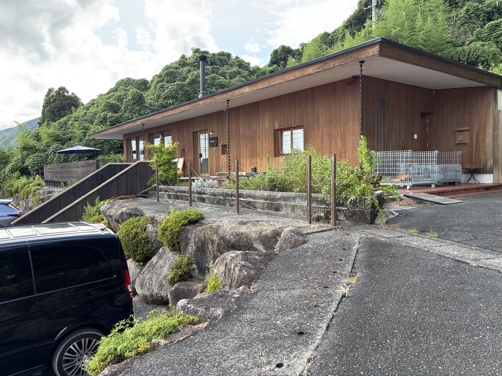

行ってきたシリーズ #12
森と湖に包まれる、
森と湖に包まれる、
静かなカフェ時間。
SEIKOUSHA CAFE ルヴァン
SEIKOUSHA CAFE ルヴァン
CONCEPT
白鬚神社にほど近い、森と琵琶湖に包まれた一軒のカフェ。 大きな窓から差し込む光と湖の景色を眺めながら、デザートプレートとコーヒーでゆっくり過ごせます。 ペットと一緒に座れるテラス席も人気です。
GALLERY





